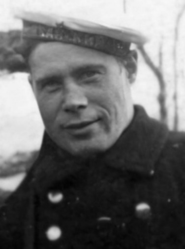

МОЛОЧИНСКИЙ
Геронтий Сергеевич
Геронтий (Роман) Сергеевич Молочинский родился 6 апреля 1913 году в городе Новороссийске.
С детских лет Роман – Ромка, как звали его друзья-пацаны, «болел морем». После 8-ого класса Г. С. Молочинский поступил в мореходное училище.
С 1929 года, по окончании мореходного училища, Г.С. Молочинский начал работу на флоте - ходил матросом на торговых судах.
С 1935 года Геронтий Сергеевич работал в Арктическом Морском Пароходстве
В 1940 он получил диплом штурмана малого плавания и с 1941 года работал на командных должностях.
В 1941 году Молочинский Г.С. появился одним из первых членов экипажа недостроенного ледокола «Анастас Микоян» и служил четвертым помощником капитана М.Н. Стрелкова (до появления капитана С.М. Сергеева и начала боевого пути корабля).
В начале сентября 1941 года Молочинский Г.С. вместе с экипажем вспомогательного крейсера «А. Микоян» участвовал в обороне Севастополя и Одессы.
В 1941 – 1942 годах Молочинский Г. С. участвовал в кругосветном переходе ледокола «А. Микоян» из Чёрного моря в Бухту Провидения (Анадырский залив, Берингово море) младшим (третьим) штурманом, командиром отделения рулевых и штурманских электриков.
Во время боя с итало-фашистами у острова Родос (Эгейское – Средиземное море) Молочинский Г.С. получил приказ занять место рулевого, после того, как старший рулевой краснофлотец Рузаков С.П. получил ранение. Несмотря на контузию от разрыва снаряда, Геронтий Сергеевич мужественно выполнял приказы командира, лавируя между торпедами.
После расформирования экипажа «Микояна» в декабре 1942 года Геронтий Сергеевич был оставлен на корабле.
Молочинский Г.С. был демобилизован 1 января 1943 года в должности 3-его Помощника Капитана л/к «А. Микоян».
В должности 3-его помощника Капитана с 1 января 1943 года по 18 июня 1944 года находился «беспрерывно в плавании в морях Ледовитого океана, пролив Лаперузе (США)».
Согласно приказа Владивостокского арктического пароходства от 17 июня 1944 года переведён на ледокол «Красин».
До 1946 года Молочинский Г.С. работал третьим, вторым и старшим штурманом на судах Северного Флота.
В мае 1948 года по состоянию здоровья был списан с ледокола «Л. Каганович» и из Лондона отправлен на лечение в Москву.
До 1953 года Молочинский Г.С. служил старшим помощником капитана на ледоколах «А. Микоян», «В. Молотов», «Л. Каганович».
В 1953 Геронтий Сергеевич получил диплом капитана дальнего плавания.
С 1953 по 1959 год он служил капитаном ледоколов «Каганович» и «Сибирь», а также капитаном дизель- электрохода «Енисей».
С 1959 по 1964 (1961) год Геронтий Сергеевич руководил группой наблюдения за строительством судов в Комсомольске-на-Амуре.
С 1964 (1961) по 1984 год Молочинский Г.С. служил капитаном порта Феодосии.
Умер Геронтий Сергеевич в 1986 году.
По сведениям Н. Козлова,
В.Дьякова (председателя клуба коллекционеров города Феодоссия),
«Известия» 19 июля 1959 год ,
«Водный транспорт» 29 ноября 1984 год,
http://naukarus.com/dizel-elektrohody-dlya-sevmorput